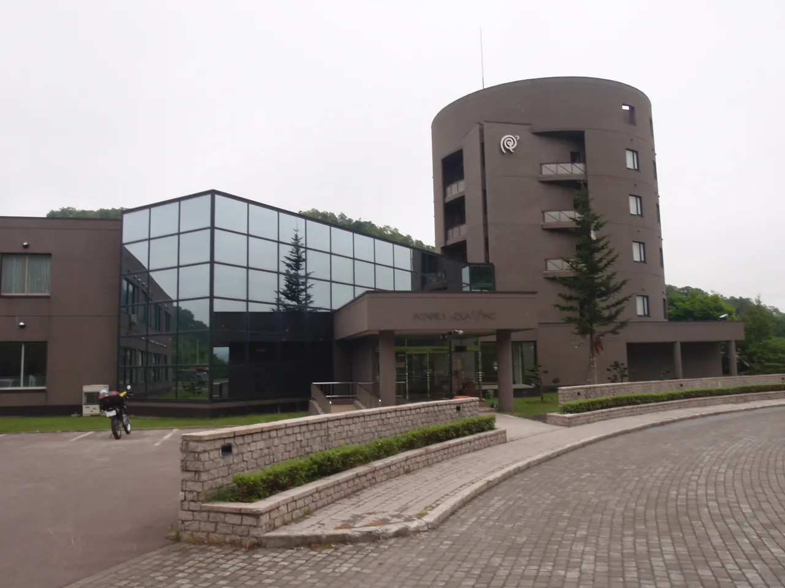
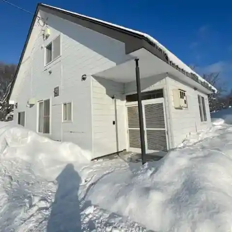
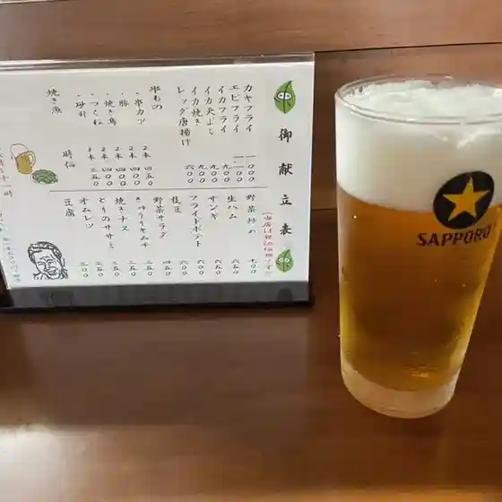
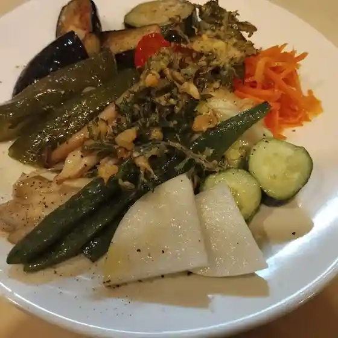
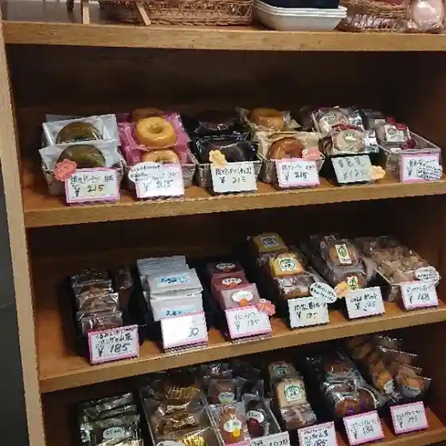
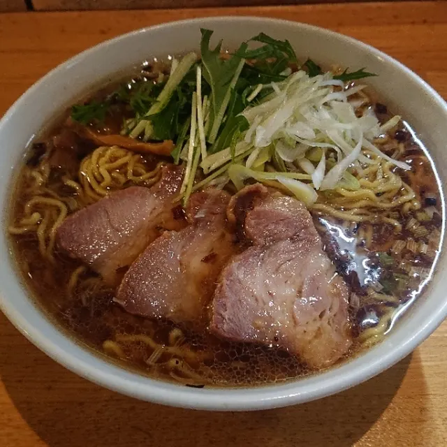
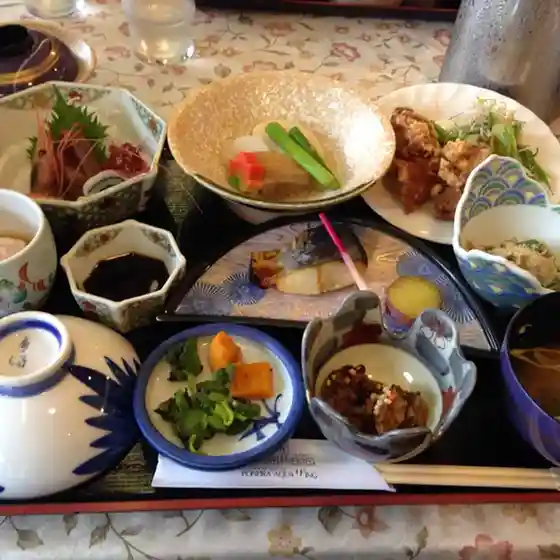
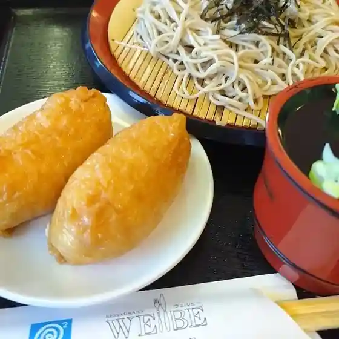
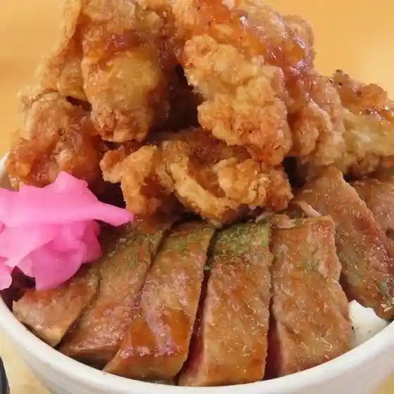

Japan / Hokkaido / Nakagawamachi
Nakagawamachi
Nakagawamachi · Hokkaido
Nakagawamachi
Highlighted on the Hokkaido map.

Stay
Hokkaido Retreat 天塩中川の宿

Hokkaido Retreat Teshio Nakagawa
Vacation house in Nakagawamachi, Hokkaido.
Dining
居酒屋 十一

Izakaya Juuichi
Bar El Rinconcito

Bar El Rinconcito
とらや菓子司

Toraya Kashi Tsukasa
味道家鰭龍

Aji Douka Hire Ryuu
ポンピラ・アクア・リズイング

Ponpira Akua Rizuingu
居酒屋きまま

Izakaya Kimama
レストラン ウェルビー

Resutoran Uerubii
道の駅 なかがわ レストラン

Michi No Eki Nakagawa Resutoran
匠舎 道の駅なかがわ
Takumi Sha Michi No Eki Nakagawa
オトカフェ
Otokafe
れすとらんささき
Resutoransasaki
栄屋旅館
Sakae Ya Ryokan
セイコーマート 天塩中川店
Seikoomaato Teshio Nakagawa Mise
Qマート 中川店
Q Maato Nakagawa Mise